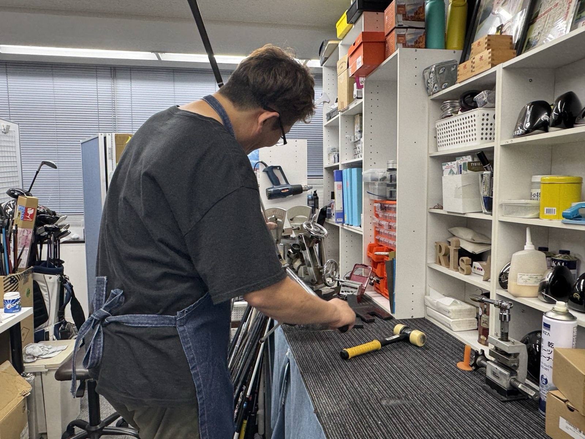
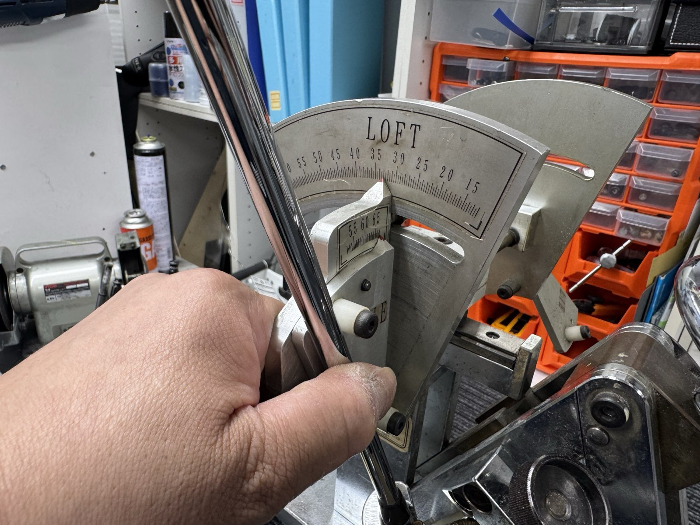
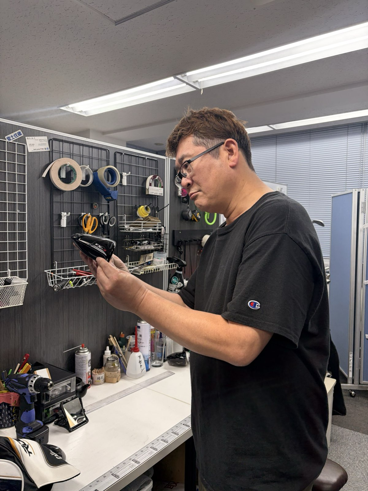
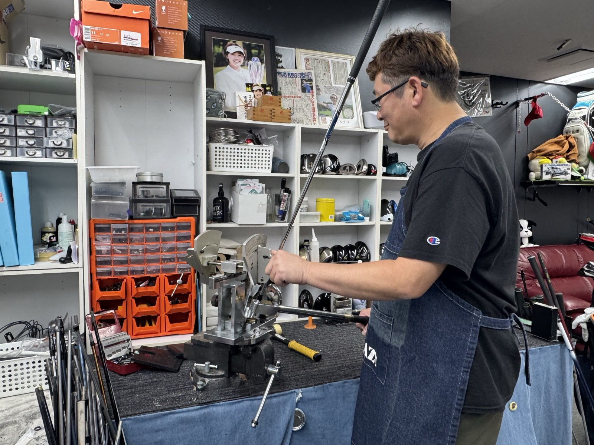

REPAIR
修理・交換
使い込んだクラブを、もう一度気持ちよく振れる状態に。
- グリップ交換
- シャフト交換
- カット・伸ばし
グリップ交換1本から、シャフト交換、ロフト・ライ角調整、クラブ製作まで。ツアーを知る職人が、一本ずつ手を入れます。

フィッティング・製作の経験
JLPGAツアー帯同
会員以外の方もOK
グリップが滑る、球がつかまらない、なんとなく振りにくい。
リズム工房では、クラブの数値だけでなく、スイングや球筋、振り心地まで見たうえで手を入れます。ゴルフスタジオに併設しているので、打席で打ってみてから決められるのも特長です。
スタジオの会員でない方も、工房だけで気軽にご利用ください。


使い込んだクラブを、もう一度気持ちよく振れる状態に。

数度の違いが球筋を変えます。スイングを見ながら合う角度を探します。

ヘッドとシャフトの組み合わせから、自分だけの一本を。打席で試打しながら決められます。

クラブは、道具である前に
その人のスイングの一部です。
ゴルフメーカー勤務時代から、延べ2,000人以上のフィッティングとクラブ製作に携わる。JLPGAツアーの帯同コーチとして10年以上、女子プロのスイング指導とクラブの製作・調整を担当。スイングがわかる職人として、数字だけでは見えない「振りやすさ」を大切にしています。

1本あたりの作業工賃です。
作業内容によっては即日お渡しも可能です。
| メニュー | 一般 | スタジオ会員 |
|---|---|---|
| グリップ交換（店内でご購入） | 330円 | 330円 |
| グリップ交換（持ち込み） | 880円〜 | 660円 |
| グリップ抜き | 880円〜 | 660円 |
| シャフト交換 | 5,500円〜 | 4,400円 |
| シャフト抜き | 2,200円 | 1,650円 |
| シャフト挿着 | 3,300円〜 | 2,750円 |
| シャフト伸ばし | 4,400円 | 3,300円 |
| シャフトカット | 2,750円〜 | 2,200円 |
| ロフト・ライ角調整 | 1,100円 | 660円 |
※グリップやシャフトなどの部品代は別途かかります。
※クラブの種類や状態により、料金が変わる場合があります。
お電話かLINEで、お悩みや作業内容をお聞かせください。
クラブをお持ちください。必要に応じて打席で試打して確認します。
内容・料金・お渡し日をご説明し、ご納得いただいてから作業します。
仕上がりを一緒に確認。手入れのコツもお伝えします。
はい、どなたでもご利用いただけます。工房だけのご利用も大歓迎です。
対応しています。クラブや部品の種類によっては作業できない場合があるため、事前にご相談ください。
グリップ交換など、作業内容や当日の状況によっては即日対応が可能です。
（要確認）スムーズにご案内するため、事前にお電話かLINEでご連絡ください。